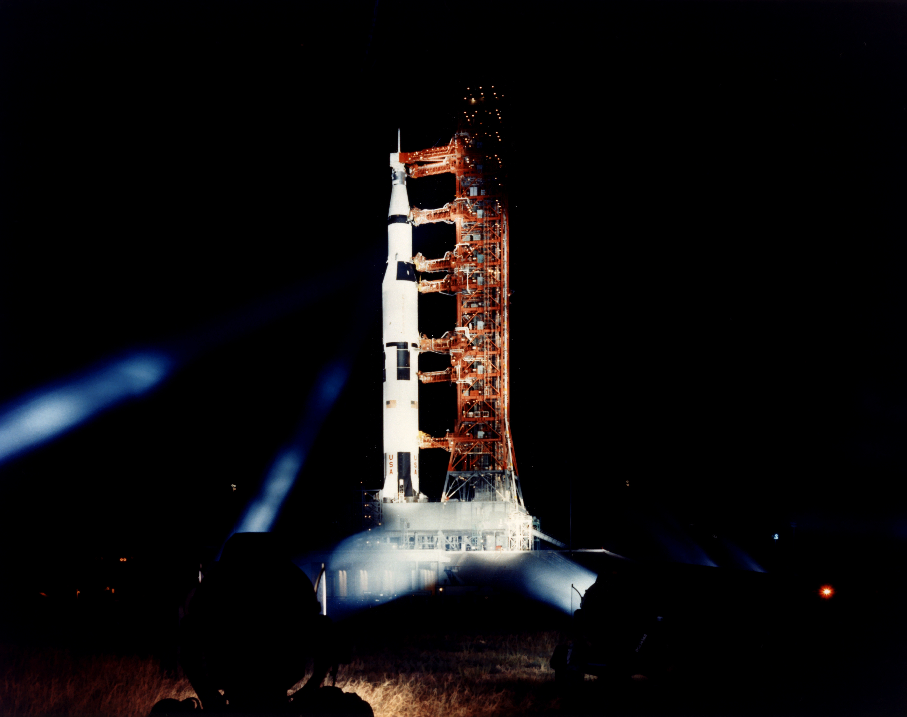
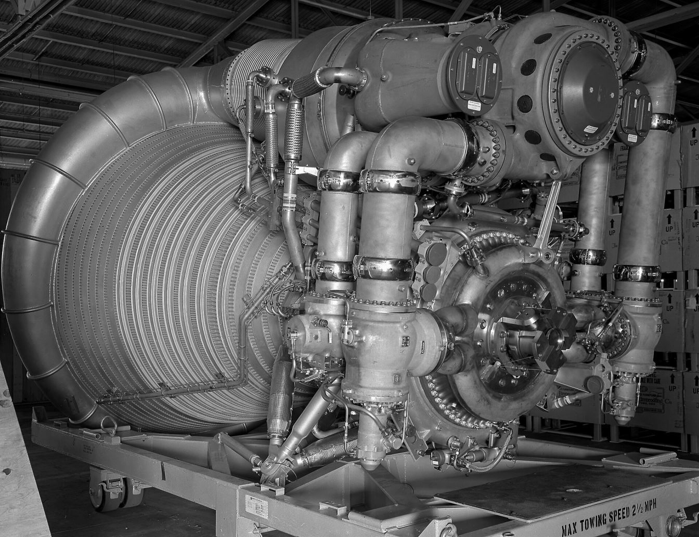

Between 1967 and 1973, thirteen Saturn V rockets flew. Not one suffered a catastrophic failure. Six Lunar Modules landed on the Moon; not one ever failed in its primary mission. This page is the engineering story of how that was possible — built with slide rules, systematic testing, and an obsession with removing everything that could break.

Saturn V — by the numbers
| Specification | Value |
|---|---|
| Height | 110.6 m |
| Diameter (S-IC, S-II) | 10.1 m |
| Diameter (S-IVB) | 6.6 m |
| Weight at liftoff | ~2,950,000 kg |
| Payload to low Earth orbit | ~140,000 kg |
| Payload to trans-lunar injection | ~48,600 kg |
| Total liftoff thrust | 33,360 kN — later uprated to ~34,500 kN (7,766,000 lbf) |
| Total F-1 engines flown | 65 |
| Cost per launch | ~$185 million (1969 dollars) |
The five F-1 engines together consumed 15 tons of propellant per second — enough to drain an Olympic swimming pool in about 25 seconds. The rocket was more than five times taller than a Boeing 747, and generated enough power at liftoff to light up all of New York City for several seconds.
The F-1 engine — engineering the impossible
The Rocketdyne F-1 remains the most powerful single-combustion-chamber liquid rocket engine ever flown: 6,700 kN at sea level, standing 5.6 m tall with a 3.7 m nozzle, weighing 8,400 kg — each of the five producing roughly as much thrust as all three Space Shuttle main engines combined.
It used the simplest possible cycle, the gas-generator cycle: a small gas generator burned a fuel-rich mixture, and its hot gas spun a single turbine driving two pumps on one shaft — 24,811 gallons of liquid oxygen and 15,471 gallons of kerosene per minute. The exhaust was then routed into the nozzle extension, where it formed a protective film between the 5,800 °F flame and the nozzle wall.
The chamber walls were cooled regeneratively by 178 Inconel X750 tubes brazed together: fuel flowed down through the tubes, absorbed the wall's heat, turned around, flowed back up — and arrived at the injector pre-heated. One design solving two problems at once.
The combustion instability crisis
During development, the F-1 suffered severe combustion instability — pressure oscillations around 2,000 Hz that could shake an engine to pieces in fractions of a second. Rocketdyne assigned 175 engineers full-time to the problem; NASA formed an ad hoc committee; Princeton scientists were brought in; and roughly 40–50 different injector plate designs were tested.
The breakthrough was a brutally simple test: engineers detonated small bomb charges inside the combustion chamber while the engine ran at full power, deliberately triggering the worst possible instability — then measured how quickly each injector design damped the oscillations. A recovery time under 10 milliseconds passed.
The fix was an injector plate divided by copper-alloy baffles into compartments, so pressure waves could never sweep across the whole face — a 44-inch forged copper disk with thousands of precisely angled orifices. Copper, for thermal conductivity: it pulled heat away from the flame faster than the metal could melt. By October 1963 the redesigned engine had fired nearly 100 times without instability; on 19 November 1963 NASA declared the problem solved. All 65 flown engines ran without a single incident.
And it was all done without computers — slide rules, mechanical calculators, hand-drawn blueprints. No computational fluid dynamics, no finite element analysis, no CAD.

The Lunar Module — Grumman's spider
The Lunar Module is the only crewed spacecraft ever designed to operate exclusively in vacuum. No aerodynamics, no heat shield, no streamlining — which is why it looked like a bug. Grumman won the contract in September 1962 (~$350 million initially, ~$2.2 billion in total), and built a machine of two separate spacecraft bolted together:
- Descent stage — the octagonal lower half: descent engine, four cantilevered landing legs with aluminium honeycomb crushable cartridges in the footpads (single-use shock absorbers), and the launch platform for the ascent stage. It stayed on the Moon.
- Ascent stage — the crew cabin: ascent engine, reaction control thrusters, guidance computer, docking system. The entire ascent stage was the "lifeboat" — it could be fired at any moment, with no preparation, if anything went wrong on the surface.
| LM-5 "Eagle" (Apollo 11) | Value |
|---|---|
| Height / width (gear deployed) | 7.0 m / 9.4 m |
| Ascent stage (dry / fueled) | 2,180 kg / 4,630 kg |
| Descent stage (dry / fueled) | 2,000 kg / 10,334 kg |
| Total at landing | ~14,850 kg |
| Cabin volume | 6.65 m³ — about a large refrigerator |
| Mission duration (J-missions) | Up to 75 hours |
The LM pioneered five technologies that became industry standards: the first broadly throttleable rocket engine, the first all-fly-by-wire control system for a vertical landing vehicle, the first strap-down inertial navigation unit, the first operational solid-state radar, and the first pressure-fed ablatively-cooled throttleable hypergolic engine in space.
The cabin had no seats — astronauts stood, held by harnesses, faces against the small triangular windows. Standing was not a sacrifice: it gave the commander the best possible view of the surface through the downward-angled windows. The walls were less than 0.3 mm thick in places. During Apollo 11's pre-launch checks, a technician dropped a screwdriver and it punched right through the ascent stage skin. The hole was patched — and the incident entered the program's legend.
The descent engine — the first throttleable rocket
NASA called the LM Descent Engine (built by TRW) "probably the biggest challenge and the most outstanding technical development of Apollo." It could throttle continuously from 10% to 65% thrust, then jumped to 92.5–100% — a 10:1 range no rocket engine had achieved. The secret was the pintle injector, a movable sleeve that adjusted the flow area for both propellants simultaneously — total sleeve travel 0.15 inches, three thousandths of an inch per 10% of throttle. (The design was so good that it directly inspired the injectors on SpaceX's Merlin engines, forty years later.)
Two details show the level of thought:
- The "throttle gap" — between 65% and 92.5%, exhaust would separate unevenly from the nozzle and erode it. The engine simply refused to operate there: command anything in the gap and it jumped to full thrust.
- The fail-safe — the injector was spring-loaded to full thrust. Lose electrical power, and the engine defaulted to maximum — exactly what you want if a landing needs aborting.
The nozzle extension was columbium alloy C-103, tapering to 0.25 mm at the edge — thinner than a credit card, and deliberately designed to crush if the LM landed on a rock, so the spacecraft would settle instead of tipping over. On Apollo 15 it actually happened: the nozzle struck a protrusion and crushed exactly as designed.
The ascent engine — simplicity as survival
The ascent engine went the opposite way: no backup, no abort mode, no second chance — so it was made as simple as physics allows. Fixed thrust, non-gimballed, pressure-fed, hypergolic propellants that ignite on contact (so no igniter to fail), no turbopumps, no gearbox. Steering was done by the RCS thrusters. Its lineage traced back to Bell's Agena upper stage, flying since 1959 — proven design carried forward deliberately. Like the F-1, it hit combustion instability in development; Rocketdyne — the company that had solved the F-1 — designed the replacement injectors. The engine then fired successfully on all six landings, plus Apollo 9 and 10. Its reliability was genuinely perfect.
The weight crisis — $50,000 per pound
The LM was born overweight, and overweight meant it could not land. Every extra pound of structure was a pound less of fuel, a second less of hover, a smaller safety margin. Grumman VP Joseph Gavin launched the Super Weight Improvement Program — and personally offered a $50,000 bounty for every pound removed (roughly $450,000 per pound in today's money).
| What was removed or changed | Weight saved |
|---|---|
| Seats removed — astronauts stand | ~50+ lbs per seat |
| Windows shrunk from helicopter-style to small triangles | ~30+ lbs |
| Landing legs reduced from 5 to 4 | Hundreds of lbs |
| Hatches reduced from 2 to 1 | Significant |
| Skin thinned from 0.03" to 0.012" where possible | Major savings |
| Batteries replaced fuel cells (March 1965 decision) | Eliminated complex plumbing |
| Wiring gauge thinned below aircraft standards | ~20+ lbs |
| Honeycomb crush cartridges instead of hydraulic landing struts | Simpler and lighter |
The Eagle touched down with less than 30 seconds of hover fuel remaining — the 30-second warning light had already lit. Every pound shed during SWIP is part of why Apollo 11 found a landing spot in time. (The later J-missions were deliberately heavier — they carried the lunar rover — because the Saturn V's payload had been uprated by then.)
The brains: the IBM Instrument Unit
Mounted above the S-IVB, a ring of aluminium honeycomb held the rocket's entire guidance system. Its computer, the Launch Vehicle Digital Computer: 28-bit words, a 2.048 MHz clock, 32K words of magnetic core memory that survived power loss, and triple-redundant logic with voting — if one circuit disagreed with the other two, it was outvoted. During flight it monitored 1,348 systems simultaneously. Next to it sat the ST-124-M3 inertial platform: three gyroscopes floating on gas bearings on a film of dry nitrogen — zero friction, and enough precision to navigate to the Moon. In the vacuum, the electronics were cooled by a methanol-water mixture circulating through cold plates and rejected to space through a sublimation heat exchanger — water exposed to vacuum, freezing and sublimating away with the heat.
How it was built
The materials were chosen like the engines: proven, conservative, exactly specified. 2219-T87 aluminium for the first stage (strong at cryogenic temperatures), 2014-T6 for the upper stages, Inconel X750 for the F-1's hot tubes, copper for its injector, titanium for the descent engine's chamber, columbium C-103 for its nozzle, and aluminium honeycomb wherever strength-per-kilo mattered most.
The S-IC stage alone contained over 900 metres of welds, every butt weld X-rayed — zero cracks of any size accepted. Analysis of 144,000 inches of production welds showed 79% of all defects were porosity, and the program's metallurgists traced the cause to surface contamination. Large tank panels were chemically milled — acid etched away material in precise patterns, leaving a waffle of thick ribs with thin skin between: strength without weight.
The building and the road
The Vehicle Assembly Building — 160 m tall, 3.7 million m³, four bays with the world's largest doors — existed because the Saturn V could not be stacked outdoors: even a 10–15 knot wind would make the work dangerous. Its air conditioning was 10,000 tons, because Florida humidity would otherwise have iced up the cryogenic tank surfaces. Stages arrived by barge from New Orleans and California — the S-IC making a 932-mile sea journey — and the finished rocket rode to the pad on the crawler-transporter: ~3,000 tons empty, eight tracks, 1.6 km/h loaded, 296 litres of diesel per kilometre, keeping the rocket level within a fraction of a degree even on a 5% grade. In 1965 its roller bearings cracked during early testing; the fix — sleeve bearings and eight extra inches of Alabama river rock on the roadway — taught the program one of its many lessons about testing at full scale.
Every Saturn V flight
| Mission | Date | CSM | LM | Highlights |
|---|---|---|---|---|
| Apollo 4 | 9 Nov 1967 | CSM-017 | dummy | First Saturn V; flawless "all-up" test |
| Apollo 6 | 4 Apr 1968 | CSM-020 | dummy | POGO problems; 2 J-2s shut down early; S-IVB restart failure |
| Apollo 8 | 21 Dec 1968 | CSM-103 | dummy | First humans to leave Earth orbit |
| Apollo 9 | 3 Mar 1969 | Gumdrop | Spider | First crewed LM test, Earth orbit |
| Apollo 10 | 18 May 1969 | Charlie Brown | Snoopy | LM rehearses the landing in lunar orbit, to 14 km above the surface |
| Apollo 11 | 16 Jul 1969 | Columbia | Eagle | First lunar landing |
| Apollo 12 | 14 Nov 1969 | Yankee Clipper | Intrepid | Lightning struck the rocket twice — and it flew on |
| Apollo 13 | 11 Apr 1970 | Odyssey | Aquarius | Oxygen tank explosion; the LM became the lifeboat |
| Apollo 14 | 31 Jan 1971 | Kitty Hawk | Antares | Return to flight after Apollo 13 |
| Apollo 15 | 26 Jul 1971 | Endeavour | Falcon | First J-mission: lunar rover, 3-day surface stay |
| Apollo 16 | 16 Apr 1972 | Casper | Orion | Descartes Highlands |
| Apollo 17 | 7 Dec 1972 | America | Challenger | Final landing; first scientist-astronaut (Harrison Schmitt) |
| Skylab 1 | 14 May 1973 | — | — | Two-stage Saturn V; last flight of the line |
Two more rockets were built but never flew: SA-514 (now displayed at Johnson Space Center) and SA-515 (its stages scattered across museums). The anomalies the program did survive are famous: Apollo 12 was struck by lightning twice during launch — at 36.5 and 52 seconds — and the Saturn V's guidance, running on the Instrument Unit's independent power, never noticed; Mission Control's "SCE to AUX" call restored the telemetry. On Apollo 13, the S-II's centre engine shut down 132 seconds early from POGO oscillations — and the guidance smoothly compensated with the remaining four. The fix from the Apollo 6 investigation had already been designed in: helium-charged accumulators in the LOX feed lines, acting as shock absorbers.
The lessons that endure
- Test what you fly, fly what you test — George Mueller's "all-up testing" was called reckless; Apollo 4 was near-flawless on the first try.
- There are no random failures — Grumman documented 14,247 test failures and anomalies over the LM program. Only 22 defied analysis. Every other one was understood and fixed.
- Simplicity is reliability — the ascent engine had no turbopumps, no igniter, no gimbals, no throttle. There was almost nothing that could fail.
- Constraints drive innovation — the weight crisis forced honeycomb crush cartridges, chemical milling, pintle injectors and fly-by-wire into existence.
- Solve the hardest problem first — combustion instability was attacked with 175 engineers and bomb tests until it was dead. It never appeared in flight because it was killed on the ground.
- Redundancy in depth — triple-redundant voting circuits, quad-redundant engine shutoff valves, three independent rate gyro packages. No single point of failure, by design.
- The slide-rule era — every trajectory, every weld spec, every heat transfer model was calculated by hand. No PCs, no CAD, no CFD — just method and care.
Where to see these machines
- Saturn V (SA-514) — Johnson Space Center, Houston
- Saturn V — Kennedy Space Center, Florida
- Saturn V (dynamic test vehicle) — U.S. Space & Rocket Center, Huntsville
- Lunar Module LM-2 — National Air and Space Museum, Washington DC
- Lunar Module LM-13 (would have been Apollo 18) — Cradle of Aviation Museum, New York
- F-1 engines recovered from the ocean — museums across the US
For the flight story of the Saturn V, see Saturn V: How It Was Built — and for what it carried into history, Apollo 11.